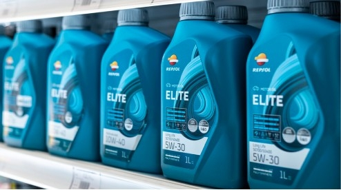
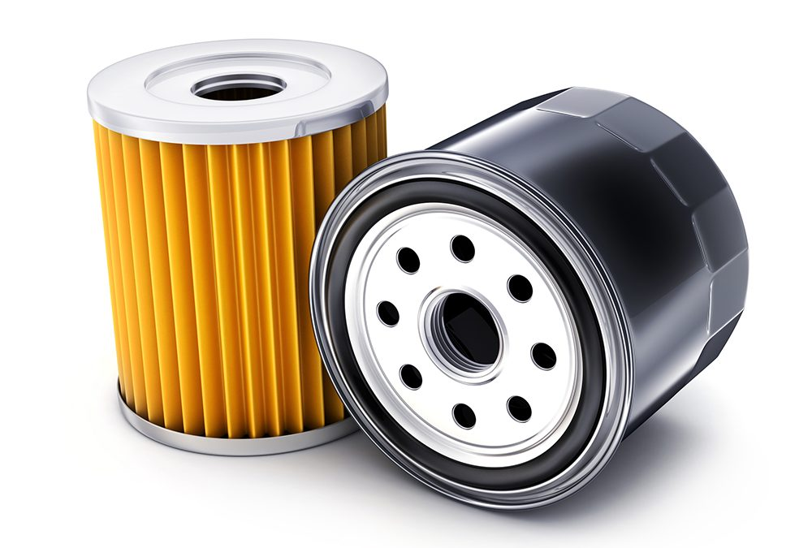
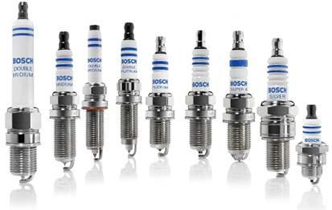
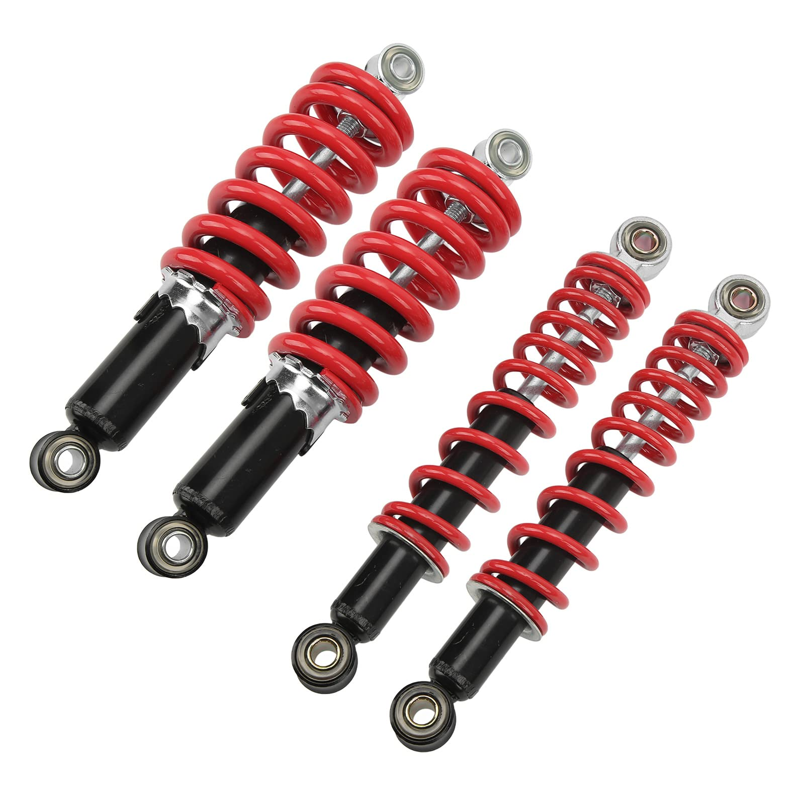
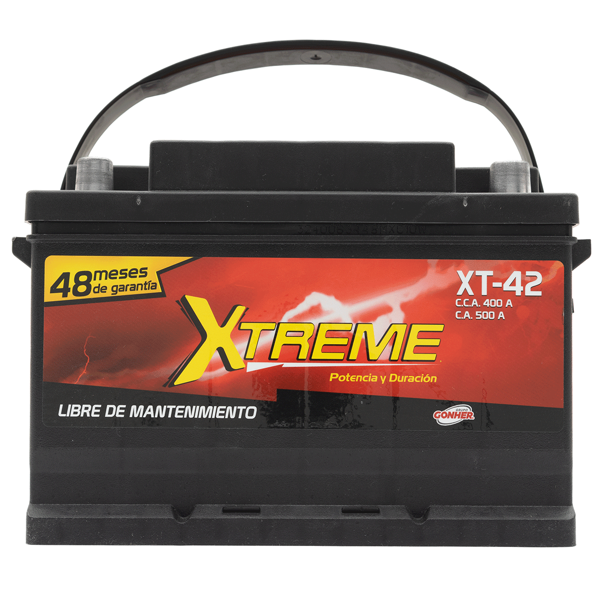
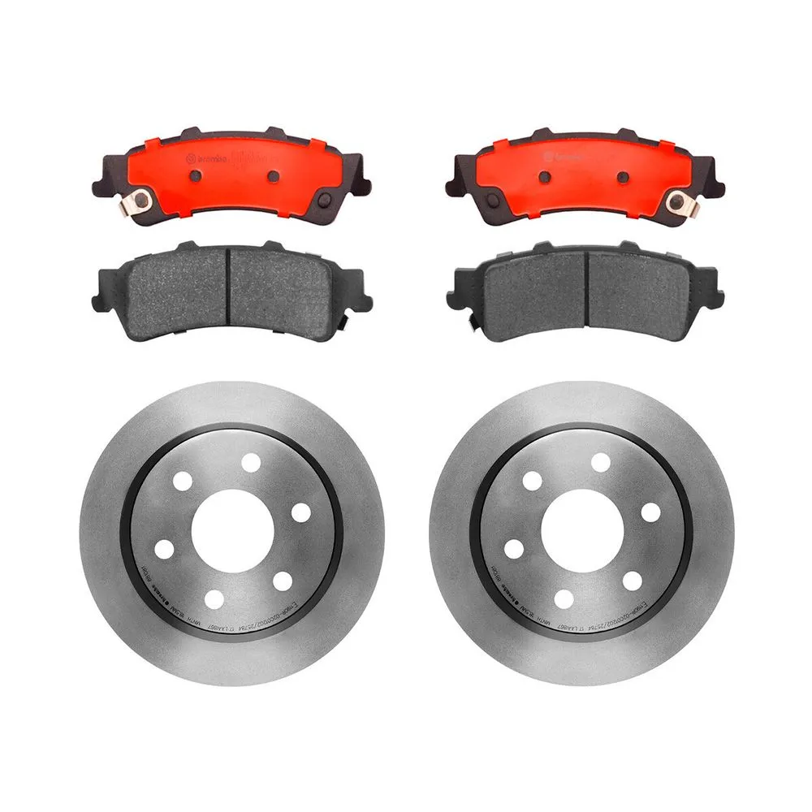

.png)

Aceites para Motor Multigrado
Descripción: Aceite lubricante multigrado que protege el motor contra el desgaste, reduce la fricción y mejora el desempeño en arranques en frío y altas temperaturas.
Click aqui para conocer nuestros modelos
Filtro de Aceite para Motor
Descripción: Filtro diseñado con medios filtrantes de alto desempeño que garantizan la retención óptima de partículas contaminantes, manteniendo la correcta lubricación del motor y prolongando su vida útil. Cumple con especificaciones OEM y es compatible con múltiples marcas y modelos.
Click aqui para conocer nuestros modelos
Pastillas de Freno de Alto Desempeño
Descripción: Pastillas de freno fabricadas con compuestos de fricción avanzados, resistentes a altas temperaturas y desgaste prematuro. Proporcionan una respuesta de frenado precisa, silenciosa y confiable en condiciones de manejo urbano y de carretera.
Click aqui para conocer nuestros modelos
Bujías de Encendido
Descripción: Bujías de encendido diseñadas para garantizar una chispa constante y eficiente, mejorando la combustión, el arranque del motor y el rendimiento general del vehículo, además de contribuir a un menor consumo de combustible.
Click aqui para conocer nuestros modelos
Amortiguadores para Suspensión<
Descripción: Amortiguadores hidráulicos y/o de gas presurizado que optimizan la absorción de impactos, mejoran el control del vehículo y brindan mayor confort y seguridad en todo tipo de superficies y condiciones de manejo.
Click aqui para conocer nuestros modelos
Batería Automotriz de Larga Duración
Descripción: Batería de alto rendimiento con excelente capacidad de arranque y resistencia a condiciones extremas. Ideal para autos compactos, sedanes y camionetas.
Click aqui para conocer nuestros modelos
Balatas y Discos de Freno
Descripción: Batería de alto rendimiento con excelente capacidad de arranque y resistencia a condiciones extremas. Ideal para autos compactos, sedanes y camionetas.
Click aqui para conocer nuestros modelos